公開面
インターネット公開はHTTPS 443のみ。HTTP 80はHTTPSへの転送に限定する。
制作依頼の受付、合意、進行、修正、承認、納品を一つの証跡へつなぐ。初期本番は二拠点オンプレミスで運用し、危険な状態では処理を止める。
本書は、要件定義を実装可能なシステム境界、モジュール責務、データ保全、配置、運用、復旧へ落とし込む。詳細なクラス、全API項目、全テーブル定義は後続の詳細設計で確定する。
インターネット公開はHTTPS 443のみ。HTTP 80はHTTPSへの転送に限定する。
VPN経由の分離ネットワークに限定し、SSH、DB、MinIO、監視、バックアップを公開しない。
隔離領域から検査済み領域へ昇格したオブジェクトだけを配布する。
認可、検査、時刻、容量、複製、証明書、バックアップの異常時は対象操作を停止する。
利用者、運営者、外部サービス、オンプレ境界を分ける。依頼代金は扱わず、Stripeは本サービス自身のサブスクリプション請求にだけ使用する。

| アクター | 主な操作 | 見える情報 | 見せない情報 |
|---|---|---|---|
| クリエイター側 | サービス公開、依頼審査、条件提示、案件進行、請求管理 | 所属ワークスペースの公開・内部情報 | 他ワークスペース、運営者の内部情報 |
| 依頼者側 | 依頼、合意、入力、コメント、修正依頼、承認、受領 | 招待された案件の公開情報と自身の権限範囲 | 内部タスク、非公開進捗、他案件、他依頼者 |
| 運営者 | 通報対応、最小権限サポート、緊急停止 | 職務と事案に必要な最小範囲 | 無関係な案件内容、秘密情報、平文トークン |
| サーバー管理者 | 配置、監視、バックアップ、復旧 | 基盤メトリクスと秘匿済みログ | 業務データ本文の常時閲覧 |
| 外部プロフィール閲覧者 | 公開プロフィールと受付ページの閲覧 | 明示的に公開された項目 | 実名、メール、案件、権限、内部状態 |
Spring Bootのモジュラーモノリスを一つのデプロイ単位とし、業務境界ごとに内部モジュールを分離する。フロントエンドはReactとTypeScript、外部契約はRESTとOpenAPIで管理する。

| モジュール | 主責務 | 所有する主要データ | 公開契約 |
|---|---|---|---|
identity-access | 本人確認、セッション、MFA、再認証、依頼者リンク | account、credential、session metadata、access grant | 認証済み主体、認証強度、失効命令 |
workspace-membership | ワークスペース、招待、役割、担当者 | workspace、membership、invitation | 所属照会、役割変更イベント |
public-catalog | 公開プロフィール、制作サービス、フローテンプレート | profile、service、workflow template version | 公開用射影、テンプレート版 |
intake | 依頼フォーム、迷惑対策、審査、依頼履歴 | request、request answer、screening event | 依頼受付、採否イベント |
agreement | 条件提示、合意スナップショット、変更注文、承認規則 | offer、agreement version、change order、party acceptance | 有効合意版、合意成立イベント |
project | 案件、チェックポイント、内部タスク、保留、担当 | project、checkpoint、task、assignment | 案件状態、次の予定、待ち主体 |
collaboration | 進捗、コメント、修正、承認、納品・受領 | update、comment、revision round、approval、delivery | 公開タイムライン、承認成立イベント |
file | 分割アップロード、検査、版、プレビュー、ダウンロード | file record、object version、scan result、download grant | 検査済みファイル参照、拒否理由 |
schedule-notification | 営業日、二種類の期限、再計算案、通知 | calendar、schedule proposal、notification preference | 予定計算、通知要求 |
billing | 本サービスのプラン、利用上限、Stripe連携、猶予・読取専用 | subscription、entitlement、usage counter、billing event | 利用権、請求状態変更イベント |
audit-admin | 追記監査、通報、支援アクセス、緊急停止 | audit event、report、support grant、kill switch | 監査追記、停止判定、支援期限 |
同期トランザクションは状態変更とOutbox記録までを一単位とし、外部送信と重い処理はワーカーへ渡す。再試行しても二重通知、二重承認、二重請求を発生させない。
公開中のサービス版を依頼へ固定し、フォーム回答を保存する。審査で承認した時点では案件を開始せず、条件提示版と承認者規則を生成する。
対象版、当事者、認証時刻、表示ハッシュを再確認し、各当事者の明示操作を追記する。必要人数が揃った時だけ合意成立イベントを発行する。
合意版から案件フローを複製し、後のテンプレート変更から隔離する。チェックポイントは順序、入力、提出物、承認条件を満たした場合だけ遷移する。
仕様内修正、仕様不一致の訂正、追加変更を別のコマンドとして扱う。追加変更は変更注文の再合意前に作業対象へ入れない。
検査済みファイルだけから納品パッケージを固定し、受領対象版を再表示する。受領は自動成立させず、明示操作と監査記録を残す。

clean確定後にだけ参照可能。| 集約 | 正当な遷移の判定 | 競合防止 | 追記証跡 |
|---|---|---|---|
| 依頼 | 公開版、受付状態、迷惑対策、採否権限 | 楽観ロックとコマンド冪等キー | 送信、採否、取下げ |
| 合意 | 対象版、必要当事者、直近認証、時刻健全性 | 対象版ハッシュと一意な当事者受諾 | 提示、閲覧、受諾、変更注文 |
| 案件 | 合意成立、保留状態、順序、担当権限 | 行バージョンと遷移コマンドID | 開始、保留、再開、完了、取消 |
| チェックポイント | 入力・提出・承認条件、前段完了 | 状態版と承認一意制約 | 提出、差戻し、承認、固定 |
| ファイル | 検査結果、利用関係、用途、容量状態 | オブジェクト版と状態遷移CAS | 開始、確定、拒否、陰性、昇格、配布 |
| サブスクリプション | 署名済みWebhook、イベント順序、猶予期限 | StripeイベントIDの一意制約 | 契約、変更、失敗、猶予、読取専用、復帰 |
入口だけでなく、各業務コマンドとデータ取得で主体、役割、ワークスペース、案件関係、対象版、認証強度を検査する。判断不能は拒否する。
| 対象 | 方式 | 有効期間 | 強制失効 |
|---|---|---|---|
| クリエイター | 確認済みメール＋パスキーまたはTOTP | アイドル12時間、絶対7日 | ログアウト、認証情報変更、役割失効、復旧完了 |
| 依頼者 | 案件・メール・役割に結合したワンタイムリンク | リンク15分、確立セッションはアイドル12時間・絶対7日 | 再発行、案件権限失効、復旧完了 |
| 重要操作 | 30分以内の再認証を要求 | 操作直前に対象版を再表示 | 時刻異常、権限変更、対象版変更 |
| ダウンロード | 関係性検査後の短命署名URL | 5分以内 | ファイル状態変更、案件権限失効、復旧完了 |
| 運営者 | 個人アカウント＋MFA＋VPN＋期限付き支援権限 | 事案単位、最小時間 | 期限、事案終了、緊急停止、復旧完了 |
HttpOnly、Secure、適切なSameSite、固定Path、公開環境限定Domainを使う。セッション、MFA、再認証時刻、失効世代、運営者の支援権限を検査する。
ワークスペース所属、案件参加、依頼者メール、対象ファイル・コメント・承認との所有関係を検査する。
役割、案件状態、公開範囲、対象版、期限、緊急停止、縮退状態を同時に評価する。
重要操作の許可は監査へ追記し、拒否は秘密を含まない理由コードと相関IDを残す。評価不能は拒否する。
主系拠点で通常運用し、地理的に分離した待機系拠点へデータと復旧資材を複製する。クラウドは要件定義の採算ゲートを満たすまで中核処理に使わない。

| ゾーン | 配置 | 許可する通信 | 禁止する通信 |
|---|---|---|---|
| インターネット | 利用者、外部Webhook送信元 | 公開VIPの443、80から443への転送 | 管理ポート、DB、オブジェクトストレージ |
| DMZ | ファイアウォール、IDS、Nginx WAF | 検査済みHTTPをアプリへ転送 | データ層への直接到達 |
| アプリ | Web静的配信、Spring Boot、ワーカー | 必要なデータ層、メール、Stripe、DNS、時刻同期 | 任意の東西通信、管理端末からの直接公開 |
| データ | PostgreSQL、Valkey、MinIO、ClamAV | アプリ／ワーカーの許可済みポート、複製 | インターネットとDMZからの直接通信 |
| 管理 | VPN踏み台、監視、ログ、構成管理 | 個人MFA付きVPN、必要先への限定管理 | 共有アカウント、恒久昇格、公開接続 |
| バックアップ | 暗号化バックアップリポジトリ | 一方向の書込み、復元訓練時の限定読出し | アプリ通常系からの削除、公開読出し |
| 待機系拠点 | PostgreSQL待機、MinIO複製、構成・イメージキャッシュ、復旧監視 | WireGuard経由の複製と監視 | 平常時の利用者書込み |
| 検知条件 | 警告 | 自動制限 | 解除条件 |
|---|---|---|---|
| WAL複製遅延 | 15分 | 60分で全体を読み取り専用 | 連続正常、欠損なし、運用者承認 |
| MinIO使用率 | 80% | 90%で新規アップロード停止 | 容量回復と整合性確認 |
| PostgreSQL使用率 | 運用警告 | 85%で新規案件生成停止 | 空き容量回復とVACUUM／健全性確認 |
| 時刻ずれ | 傾向監視 | 2秒超で合意・承認・受領・監査停止 | 複数NTP源で連続正常 |
| ClamAV | 定義期限接近 | 停止、失敗、定義24時間超で昇格停止 | 更新・自己試験・EICAR検査成功 |
| バックアップ／復元検証 | 期限接近 | 失敗または期限超過でデプロイ停止 | 新しい成功バックアップと復元検証 |
| TLS証明書 | 期限前通知 | 更新検証失敗でデプロイ停止 | 新証明書の実接続確認 |
| UPS低残量 | 閾値到達 | 順序付き安全停止 | 電源、容量、複製、時刻の起動前検査 |
RPO 15分、RTO 4時間を設計目標とし、バックアップが存在することではなく、隔離環境で復元し業務整合性を検証できることを合格条件とする。

監視と人の判断でインシデントを開始し、外部入口を保守表示または読み取り専用へ切り替える。障害中の未確定操作を監査へ記録する。
WAL、ベースバックアップ、MinIO版、構成版、コンテナ署名を照合し、RPO内の最新かつ一貫した復旧点を選ぶ。危険な設定を含む復旧点は採用しない。
ネットワークを閉じた状態でDB、オブジェクト、構成を復元し、件数、外部キー、版、ハッシュ、監査連鎖、Outbox重複を検証する。
クリエイター・依頼者セッション、ワンタイムリンク、管理者昇格、復旧コード、短命ダウンロードURLの世代を更新する。
運用者の読み取り確認、代表業務の合成試験、監視、複製、バックアップを確認した後に利用者トラフィックを段階的に戻す。
旧環境をそのまま再参加させず、原因除去、初期化、再同期、再検証を行う。事故中の危険設定や漏えい済み秘密を復活させない。
| 状態 | 確認内容 | 不合格時 |
|---|---|---|
| 変更直後 | 構成差分、秘密参照、マイグレーション互換、停止条件 | 反映を中止し旧版を維持 |
| 再起動後 | 証明書、時刻、DB、Valkey、MinIO、ClamAV、監視の依存順 | 公開入口を開かない |
| 再接続後 | 旧セッション・旧リンク・旧URLが拒否されること | 認証世代を再更新し調査 |
| 本番中 | 読み書き合成試験、通知、Outbox、複製遅延、容量 | 対象機能を縮退または全体読取専用 |
| アーカイブ後 | ログ、メール、出力、バックアップに秘密が増えていないこと | 保持・秘匿処理をやり直す |
| ロールバック後 | 旧版が新スキーマを安全に読めること、危険設定が復活しないこと | ロールバックせず前進修復 |
| バックアップ復元後 | 削除・失効・公開制御を再適用し、再露出しないこと | 隔離を維持し復旧点を再選定 |
監視は障害を知らせるだけでなく、自動停止の入力とリリース判定の証拠になる。ログは相関可能にしつつ、本文、秘密、認証情報、不要な個人情報を収集しない。
| 信号 | 収集内容 | 主な判定 | 秘匿 |
|---|---|---|---|
| Metrics | RED、USE、WAL遅延、容量、Outbox滞留、スキャン時間、通知失敗 | SLO、容量、自動縮退 | 利用者識別子を高カーディナリティラベルにしない |
| Logs | 相関ID、操作種別、結果コード、対象種別、処理時間 | 障害切り分け、不正試行 | 本文、トークン、Cookie、署名URL、秘密を除去 |
| Audit | 主体、代理主体、対象、版、重要操作、時刻、結果 | 説明責任、支援アクセス、合意証跡 | 業務本文を複製せず参照IDとハッシュを使う |
| Traces | 入口、DB、Outbox、外部メール、Stripe、オブジェクト操作 | API p95、依存遅延、再試行原因 | 属性の許可リスト化とサンプリング |
| Alerts | Prometheus規則からAlertmanagerで通知 | ページ、チケット、運用連絡 | 通知本文へ個人情報や秘密を含めない |
固定依存、SBOM、ライセンス、静的解析、テスト、秘密検査、コンテナ脆弱性検査を実行し、成果物へ署名する。
expandを先行し、新旧アプリが共存できることを検証する。バックアップと復元検証が期限内でなければ実行しない。
一部インスタンスへ反映し、起動前検査、合成試験、エラー率、p95、Outbox、DB負荷を確認する。
段階的に切り替え、旧版を即時退避できる状態で維持する。フェイルクローズ条件に触れた場合は自動停止する。
十分な共存期間とデータ移行確認の後にcontractを実行する。ロールバック可能期間を終了する判断を監査へ残す。
| 領域 | 必要な証拠 | 不合格時 |
|---|---|---|
| 機能 | 全P0受入条件の正常系・拒否・期限切れ・再試行・復旧後テスト | リリース不可 |
| セキュリティ | 脅威モデル、認可境界、SAST／DAST／依存・イメージ検査、秘密検査、専門レビュー | リリース不可 |
| 復旧 | 隔離復元、RPO／RTO計測、全認証失効、再露出防止、待機系切替訓練 | リリース不可 |
| 性能 | LCP p75 2.5秒以内、API p95 500ms以内、想定2倍負荷と5GB転送 | 容量増強または設計修正 |
| 可用性 | 月間99.5%設計、二回線、電源、容量、複製、縮退の実証 | リリース不可 |
| 法令・取引 | 利用規約、プライバシー、取引表示、年齢、権利条件の専門確認 | 公開不可 |
| 運用 | 当番、連絡経路、Runbook、監視、バックアップ、証明書、ロールバック訓練 | リリース不可 |
要件定義書に存在するFR 83件、NFR 23件、合計106件を設計領域へ対応付ける。要件の本文と受入条件は要件定義書を正とし、本表は設計上の実現先を示す。
| 要件群 | 要件ID | 主モジュール | 設計対応 |
|---|---|---|---|
| アカウントとアクセス | identity-access、workspace-membership | 認証方式、再認証、失効 | |
| 公開プロフィール | public-catalog | 公開用射影と露出境界 | |
| 制作サービス | public-catalog | 版管理された公開契約 | |
| 制作フロー | public-catalog、project | 合意版からの案件フロー生成 | |
| 依頼受付 | intake | 受付から条件提示 | |
| 条件提示と合意 | agreement | 版固定、明示合意、変更注文 | |
| 案件進行 | project | 案件集約と公開境界 | |
| チェックポイント | project、collaboration | 順序、提出、承認、固定 | |
| 内部タスク | project | 非公開既定と公開用射影 | |
| 進捗 | collaboration | 公開・非公開データ所有権 | |
| ファイル | file | 隔離・検査・昇格・配布 | |
| コメント | collaboration | 文脈付き追記データ | |
| 修正 | collaboration、agreement | 修正種別と変更注文境界 | |
| 承認 | collaboration、agreement | 明示承認と成立判定 | |
| 日程 | schedule-notification | 営業日、期限、再合意 | |
| 通知 | schedule-notification | Outboxと再試行 | |
| 納品と記録 | collaboration、file | 固定納品版、受領、出力 | |
| 監査 | audit-admin | 追記監査と保全 | |
| 運営 | audit-admin | 期限付き支援と緊急停止 | |
| サブスクリプション | billing | 冪等Webhook、猶予、利用権 |
| 要件群 | 要件ID | 設計対応 | 主要な検証証拠 |
|---|---|---|---|
| セキュリティ | 認可・防御・秘密、ネットワーク、ファイル検査 | 脅威モデル、境界テスト、SAST／DAST、供給網・イメージ検査 | |
| プライバシー | データ最小化、削除・持出し、AI学習禁止 | データ台帳、削除・出力試験、委託先確認、復元後の再削除試験 | |
| アクセシビリティ | React共通UI、意味論的HTML、キーボード、フォーカス、コントラスト | 自動検査、スクリーンリーダー、キーボード、実画面確認 | |
| UX | モバイルファースト、320–1440px、公開・内部表示分離 | 対象幅の実画面スクリーンショットと操作試験 | |
| 性能 | 水平化可能なアプリ、非同期化と5GB転送 | LCP p75、API p95、2倍負荷、5GBアップロード・ダウンロード | |
| 可用性 | 二回線、二拠点、段階的機能制限 | SLO集計、回線断・容量・複製遅延の障害注入 | |
| 事業継続 | RPO／RTO、復元検証、認証失効 | 隔離復元、待機系切替、全認証失効、再露出防止 | |
| 観測 | Prometheus、Grafana、Loki、Alertmanager、秘匿ログ | アラート試験、ログ秘匿検査、保持・削除試験 | |
| 運用安全 | 時刻・容量の自動停止、デプロイゲート | 起動前検査、閾値試験、失敗時のデプロイ停止 | |
| 移植性 | OCI、PostgreSQL、S3、Valkey、採算ゲート、逆移行 | 構成移植試験、費用実測、事前・逆同期訓練 |
実装開始時に迷いが戻らないよう、採用案、代替案、不採用理由、再検討条件を残す。
| 判断 | 採用 | 代替と不採用理由 | 再検討条件 |
|---|---|---|---|
| サービス分割 | Spring Bootモジュラーモノリス | マイクロサービスは、初期オンプレで配備、監視、ネットワーク、整合性の運用負荷が利益を上回る。 | 独立スケールや障害分離が計測上必要になり、専任運用能力を持つ。 |
| ブラウザ認証 | サーバー管理セッション | 長寿命JWTは即時失効、権限変更、復旧後の一括無効化を複雑にする。 | 別クライアント向け公開APIを設ける場合は、短命トークンと認可サーバーを別途設計。 |
| 非同期基盤 | PostgreSQL Transactional Outbox | 専用メッセージブローカーは現時点の量に対して運用部品を増やす。 | Outbox処理量、保持、配信遅延がPostgreSQLの主要負荷になる。 |
| ファイル受入 | MinIO隔離／検査済み領域の物理分離 | 同一公開バケット内のタグ制御は誤設定時の露出範囲が広い。 | 将来のストレージ変更でも隔離境界とフェイルクローズは維持。 |
| 待機系 | 受動待機と手順化した昇格 | 初期のactive-activeは競合、スプリットブレイン、費用、訓練負荷が高い。 | 停止時間実績がSLOを継続的に侵害し、自動切替を安全に検証できる。 |
| DB変更 | expand／migrate／contract | 破壊的な一括マイグレーションはロールバックと段階反映を妨げる。 | 原則維持。例外は停止時間と復元を事前実証した単発保守のみ。 |
| クラウド | 採算・安全・改善の全条件を満たした場合のみ移行 | 技術的な利便性だけの移行は粗利、エグレス、データ統制の悪化を見落とす。 | 要件定義の全ゲートを3か月実績で満たす。 |
要件と実装の差分を残さないための更新規則。